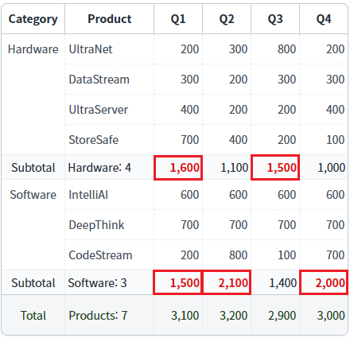
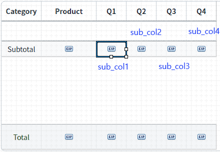
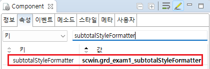

GridView의 'subtotalStyleFormatter' 속성을 사용하여, 조건에 따라 소계(subtotal) 컬럼에 CSS 'class'를 적용한 예제입니다.
조건에 따라 소계(subtotal) 컬럼에 class 적용하기
소계(subtotal)의 값이 1500 이상인 경우만 굵고 붉은 글자로 표시됨을 확인합니다.
Image 1.[브라우저(Chrome) 실행 예시]

GridView와 연결된 DataList 생성 및 연결 방법과
소계(subtotal) 생성 방법은 생략되었습니다.
1
STEP 1: class 정의하기
css 파일에 아래와 같이 class를 정의합니다.
Example 1.CSS
.wre_example_txt_red2 { color: #e10e0e !important; font-weight: bold !important; }
2
STEP 2: 소계(subtotal) 컬럼의 ID를 할당합니다.
Q1, Q2, Q3, Q4 소계(subtotal) 컬럼의 ID를 아래와 같이 정의합니다.
Q1 소계 컬럼 ID : "sub_col_1"
Q2 소계 컬럼 ID : "sub_col_2"
Q3 소계 컬럼 ID : "sub_col_3"
Q4 소계 컬럼 ID : "sub_col_4"
Image 2.웹스퀘어 스튜디오의 '디자인' 탭 예시 - 소계 컬럼 ID 예시

3
STEP 3: 속성 정의하기
GridView의 'subtotalStyleFormatter' 속성에 사용할 메소드명을 정의합니다. 이 예제에서는 'scwin.grd_exam1_subtotalStyleFormatter' 메소드가 사용되었습니다. 예시) subtotalStyleFormatter="scwin.grd_exam1_subtotalStyleFormatter"
[필수] subtotalStyleFormatter="메소드명"
예시) subtotalStyleFormatter="scwin.grd_exam1_subtotalStyleFormatter"
Image 3.웹스퀘어 스튜디오의 Component View - 속성 설정 예시

Example 2.Source
<!-- gridView 의 소스 본문 예시 --> <w2:gridView subtotalStyleFormatter="scwin.grd_exam1_subtotalStyleFormatter" dataList="data:dlt_griddata" > <!-- 중략 --> </w2:gridView>
4
STEP 4: 메소드 정의하기
'subtotalStyleFormatter' 속성에 설정한 'scwin.grd_exam1_subtotalStyleFormatter' 메소드를 정의합니다. 아래의 스크립트는 subtotal의 컬럼 ID가 "sub_col_1, sub_col_2, sub_col_3, sub_col_4"(Q1, Q2, Q3, Q4)이고, subtotal의 값이 1500 이상이면 class "wre_example_txt_red2"를 적용하는 예시입니다.
Example 3.Script
/** * gridView "grd_exam1"의 소계 class formatter */ scwin.grd_exam1_subtotalStyleFormatter = function(value, formattedValue, subtotalColumnId){ var strReturnValue; //소계 컬럼의 ID로 조건 처리 switch (subtotalColumnId) { case "sub_col_1" : //Q1 소계 컬럼 ID case "sub_col_2" : //Q2 소계 컬럼 ID case "sub_col_3" : //Q3 소계 컬럼 ID case "sub_col_4" : //Q4 소계 컬럼 ID //소계가 1500 이상이면 class "wre_example_txt_red2"를 적용합니다. if (value >= 1500) { strReturnValue = "wre_example_txt_red2"; } break; default: break; } return strReturnValue; };
subtotalStyleFormatter